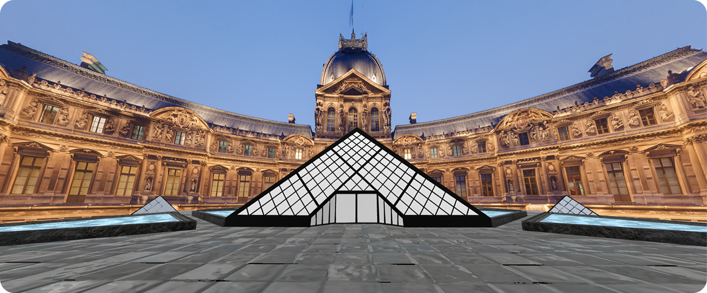

Tools: Blender, A-Frame, Glitch
Type: WebVR, 3D Modeling

This project explores how digital design can preserve and reinterpret cultural heritage. Working in a team of two, we created a WebVR experience centered around the Achaemenid bull capital — a powerful architectural artifact from ancient Persepolis, now housed at the Louvre. We 3D modeled the bull capital in Blender, focusing on its twin bull heads, fluted column shaft, and detailed carvings. The final model was optimized and exported as a .glb file, then integrated into a walkable A-Frame virtual pavilion with interactive elements.